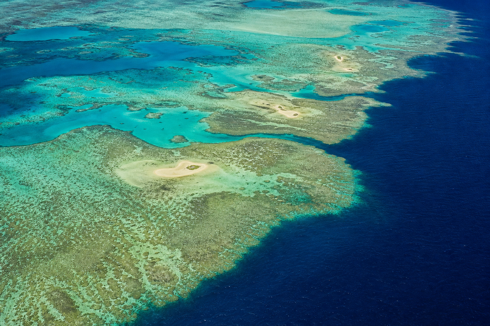
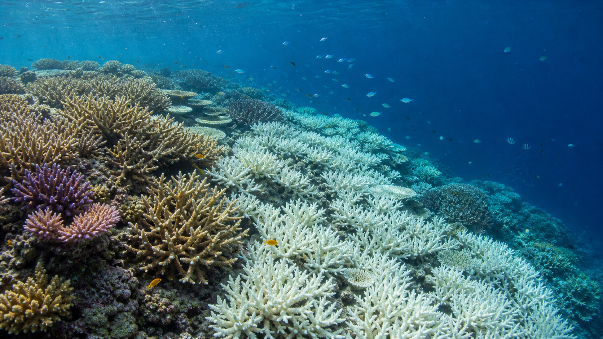

Supplemental Lesson 14 - Student ReadingEnglish - Years 5-6
Evidence briefing
The Great Barrier Reef: Living, Changing, Worth Protecting
A living system can be beautiful and under serious pressure at the same time. Read the evidence, hold onto the nuance and compare two scales of protection.
Reading mission
Mark at least four pieces of evidence with E, three possible responses with A, and box one sentence that prevents an oversimplified argument.
E EvidenceA ActionBOX Necessary nuance
1
A vast living system
One Reef - many connected places
The Great Barrier Reef is not one continuous wall of coral.

The Reef is a connected mosaic of coral reefs, islands, seagrass meadows, mangroves, deep water and coastal habitats.
2,300 kmalong the Queensland coast
344,400 km²of connected habitats
~3,000individual coral reefs
The Great Barrier Reef stretches about 2,300 kilometres along the Queensland coast and covers approximately 344,400 square kilometres. It is not one continuous wall of coral. It is a connected system of roughly 3,000 coral reefs, islands, seagrass meadows, mangroves, deep water and coastal habitats. These places support extraordinary life and are important to communities, industries and visitors.
The Reef is also Sea Country. About 70 Aboriginal and Torres Strait Islander Traditional Owner groups maintain continuing cultural, spiritual and practical connections with the region. Traditional Owners protect Sea Country through cultural knowledge, monitoring, planning and partnerships that also use contemporary science. Their custodianship is continuing - not simply part of the past.[5]
Living system 02
2
What recent monitoring found
Serious pressure, uneven change
Numbers become useful evidence when their sample, timeframe and meaning stay attached.
Monitoring helps scientists compare reef condition over time. This classroom illustration is not a photograph from the cited survey.
124reefs surveyed by the Australian Institute of Marine Science between August 2024 and May 2025
During the severe 2024 mass bleaching event, heat stress affected the largest area recorded in a Great Barrier Reef bleaching event. Cyclones, floodwater and some crown-of-thorns starfish activity added further pressure.[1][2]
The 2024/25 report found that average hard coral cover fell in the Northern, Central and Southern regions. Regional declines were about 14% to 30% compared with 2024. Living coral remained in all three regions, but recent gains had been sharply reduced.[1]
Not every reef changed in the same way
48%declined42%no net change10%increased
Evidence boundary
This is serious evidence of pressure, not evidence that every reef is already dead.
During summer 2024-25, the Reef experienced another widespread bleaching event - the sixth since 2016 and the second in consecutive summers. It was less extensive than the 2023-24 event, but it again showed how little recovery time some reefs are receiving.[2]
Monitoring 03
3
What bleaching means
Bleached does not automatically mean dead
Bleaching is a stress response. What happens next depends on severity, duration and recovery time.

A reef can contain living coral and bleached coral at the same time. Bleached coral is stressed, but some coral can recover if conditions improve.
Coral animals live with tiny algae that provide much of their energy and colour. When conditions become stressful, coral can expel these algae and turn pale or white. Water only 1-2°C above the usual summer maximum for several weeks can create enough heat stress to cause bleaching.[3]
Bleached coral is not automatically dead. Some coral recovers if the heat passes; other coral dies when stress is too severe or lasts too long. Even surviving coral may grow or reproduce more slowly. A diverse reef can recover after disturbance, but recovery takes time. More frequent marine heatwaves leave less time before the next major pressure arrives.
1Ocean water warms
2A marine heatwave creates stress
3Coral expels tiny algae
4Coral loses colour and bleaches
5Recovery or death depends on conditions
Recovery is possible when
heat passes, stress is not too severe and the coral has enough time before another major disturbance.
Risk increases when
heat is severe or prolonged and repeated disturbances shorten the time available for recovery.
Bleaching 04
Protection at two scales
The strongest argument recognises what each scale can - and cannot - do.
Lens A - Local resilience
Strengthen the Reef locally
Local and regional actions can reduce pressures that weaken Reef ecosystems. Improving the quality of water flowing from catchments can reduce fine sediment, excess nutrients, pesticides and other pollutants reaching the Reef. Managing crown-of-thorns starfish outbreaks, supporting sustainable fishing, reducing marine debris and protecting connected habitats can also help.
Traditional Owner Sea Country management brings continuing custodianship and cultural knowledge together with contemporary science. Researchers are also testing restoration and adaptation methods. These actions cannot cool the whole ocean, but they can improve conditions, protect important places and give coral communities more opportunity to survive or recover.[4][5]
Improve catchment water quality
Manage crown-of-thorns starfish outbreaks
Support sustainable fishing and reduce marine debris
Protect connected habitats
Support Traditional Owner Sea Country management
Lens B - Climate action
Address the primary long-term threat
Australian scientific assessments identify human-induced climate change as the primary threat to the Great Barrier Reef. Greenhouse gas emissions warm the atmosphere and ocean, increasing the pressure from marine heatwaves. Local projects can reduce other stresses, but they cannot by themselves stop climate-driven ocean warming.[4]
For this reason, many scientists argue that the future of coral reefs requires strong reductions in greenhouse gas emissions as well as local management and adaptation. This lens works at a larger scale and over a longer timeframe, but the need is urgent because repeated bleaching events reduce recovery opportunities.
Reduce greenhouse gas emissions
Limit future ocean warming
Reduce the pressure from marine heatwaves
Continue local management and adaptation
Protection lenses 05
6 - A protection plan without a false choice
Different jobs. Shared purpose.
A strong plan can name a priority without pretending the other scale of work is useless.
The two lenses do not have to cancel each other. Climate action addresses the largest long-term pressure. Local resilience work reduces other harms and supports recovery now. Governments still have to make decisions about priority, funding, responsibility and timing, but a strong plan can explain the different job of each response.
Local resilience
Reduces current pressures and supports recovery conditions now.
+
Climate action
Reduces the warming pressure driving widespread bleaching.